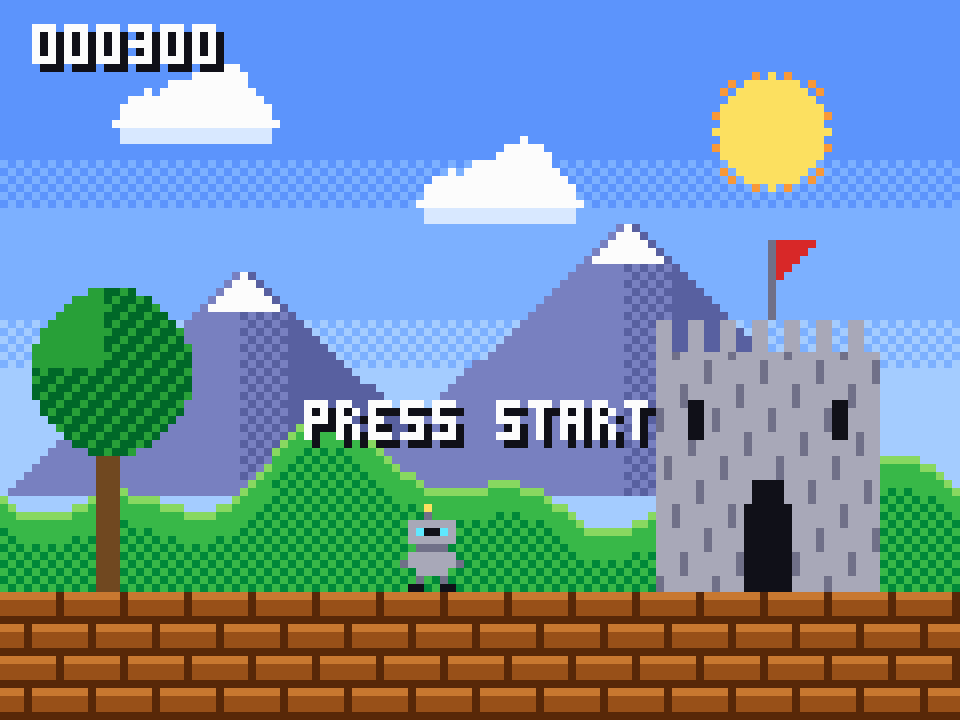
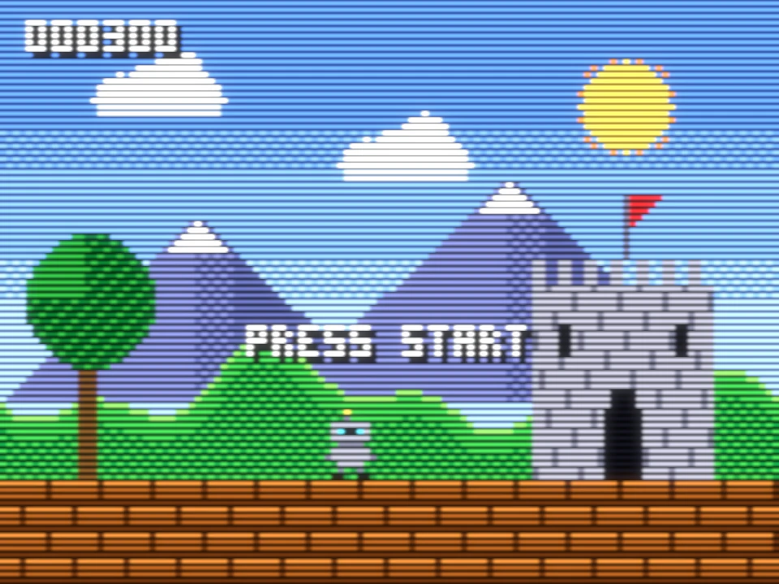

Why Old Games Look Wrong on a New TV
Plug a Super Nintendo into a new television and something is off. The picture is there, the colors are right, and it still looks harsher and blockier than you remember. Your memory is fine. The game was drawn for a different kind of screen.
The picture was never made of squares
A game from that era sends about 240 lines of picture. A tube television draws those lines with a moving beam of light, one after another, sixty times a second. There is no grid of pixels inside a tube. Each line is a soft stripe, slightly blurred along its length, with a thin dark gap between it and the next.
Those gaps are the scan lines. They are not a filter and nobody added them. A television picture has about twice that many lines, drawn in two alternating passes. These consoles draw the same 240 on every pass and leave the lines in between dark.
See it for yourself
Drag across the picture. The left side is what a flat panel shows: every game pixel as a hard square. The right side is the same picture the way a tube draws it.


Flat panelTubeThe scene is original art drawn for this page, and the tube side is a model, not a photograph: scan-line gaps and a soft beam, built the same way as Through the Mask.
Closer in, a tube adds one more layer. A Trinitron lights its screen through fine vertical stripes of red, green and blue, so the picture has texture in both directions and no hard edge anywhere.
What the artists were drawing for
The people who drew these games looked at them on tubes while they worked. The soft stripe was part of the canvas. Stair-step edges rounded off. Flat color picked up texture from the gaps. What reads as a jagged block on a modern panel was meant to arrive as a curve.
What reads as a jagged block on a modern panel was meant to arrive as a curve.
What a new TV does to it
A modern television is a fixed grid of millions of square pixels, and it was not built for 240 lines. Three things happen.
- It scales. On a 4K set, 240 lines have to be stretched across 2,160. Every game pixel becomes a hard-edged block nine screen pixels tall, with no gap and no softness.
- It guesses. Many sets mistake the signal for ordinary interlaced video and try to repair it, which smears motion.
- It waits. That processing takes time, so the picture reaches the glass a beat after you press the button. A tube has nothing to process and shows each line as it arrives.
Why a monitor from a TV station is the best version of this
Every tube does the first part. A professional monitor does it with a much finer screen, and it takes the console’s red, green and blue signals directly, with nothing mixed together and nothing to decode. That is the whole case for the monitors on this site: the picture the artists saw, at the highest quality that kind of screen ever reached.
What those monitors are is in PVM vs. BVM. How a console gets to one is in the connection guide.
Quick answers
Why do old games look blocky on a modern TV?
A modern TV stretches each game pixel into a hard-edged block. A tube drew the same picture as soft lines of light with gaps between them.
What are scan lines?
The dark gaps between the lines a tube draws when a console sends about 240 lines of picture to a screen built for twice that.
Do old consoles lag on new TVs?
Often. The TV has to process and scale the signal before showing it. A tube shows it as it arrives.
Do I need a professional monitor to play old games properly?
No. Any tube television shows the picture the way it was drawn. A professional monitor is the sharpest version of the same thing.
Sources & further reading: Hackaday — Are CRT TVs Important for Retro Gaming? · Engadget — Why retro games look better on old CRT TVs · ConsoleMods Wiki — What is 240p?